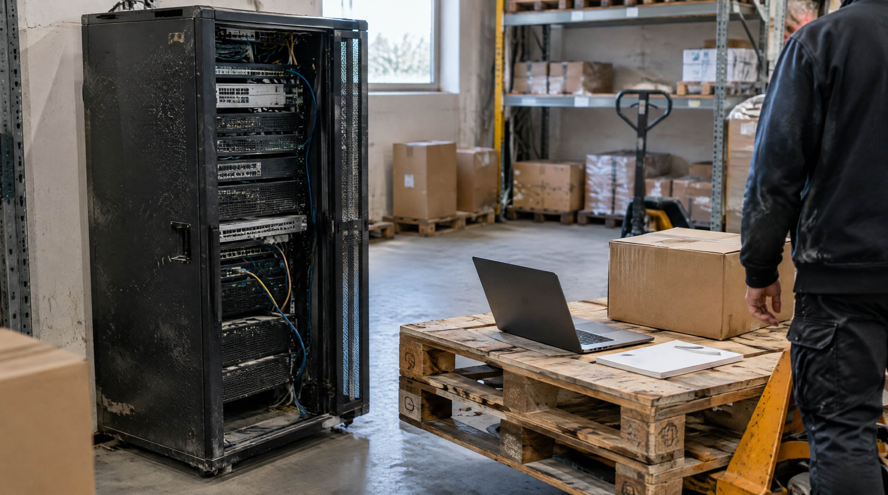

I 2015 var on-premise normen. I dag er det undtagelsen. Ikke fordi cloud er moderne, men fordi regnestykket har flyttet sig.
For de fleste danske webshops er cloud det rigtige valg. Men det er værd at vide hvorfor, og hvad man skal spørge om, før man skriver under.
Hvad er forskellen?
Et cloud-WMS kører på leverandørens servere. I tilgår det i en browser eller på en håndterminal, betaler et abonnement, og opdateringer kommer af sig selv.
Et on-premise-WMS kører på jeres egne servere. I køber en licens, ejer installationen, og står selv for drift, backup og opdateringer.
Forskellen er ikke kun hvor serveren står. Det er hvem der har ansvaret når noget går ned klokken halv seks om morgenen.
👉 Er I i gang med at vælge system? Lad os kigge på jeres setup
Hvad koster de to ting
Du finder mange sammenligninger med præcise femårstal. De er sjældent værd at bruge, fordi begge sider afhænger fuldstændigt af hvem der sælger og hvor stort lageret er. Det brugbare er at vide hvilke poster der findes, så I ikke sammenligner en halv pris med en hel.
Cloud koster: abonnementet, opsætningen i starten, og den tid jeres egne folk bruger på at komme i gang. Ikke servere, ikke opdateringer, ikke IT-drift.
On-premise koster: licensen, serveren, installationen, opdateringer der skal købes eller udføres, backup, og en it-ressource der kan holde det kørende. Den sidste post er den der oftest glemmes, og den der bliver ved.
SmartPacks egen pris afhænger af hvor meget der sendes, og afregnes pr. pakke med et minimum om måneden. Se priser hvis I vil regne på jeres egne tal.
Fordelene ved cloud
- I kan komme i gang uden et it-projekt. Ingen server der skal købes, ingen installation der skal bookes.
- Opdateringer kommer af sig selv. I er på den nyeste version uden at nogen skal gøre noget.
- I kan se lageret alle steder fra. Også hjemmefra, og også på telefonen.
- Det følger med når I vokser. Flere ordrer eller flere folk kræver ikke en serveropgradering.
- Integrationer er bygget til det. Moderne cloud-systemer taler med webshop, økonomisystem og fragt gennem API'er, ikke gennem filoverførsler om natten.
Ulemperne, ærligt
- I betaler så længe I bruger det. Der kommer ikke et tidspunkt hvor systemet er betalt af.
- I er afhængige af forbindelsen. Det håndteres med mobilt backup og med at terminalerne kan arbejde videre offline, men det skal testes, ikke tages for givet.
- Jeres data ligger hos en anden. Det kræver en databehandleraftale og en aftale om at I kan få data ud igen.
Når on-premise stadig giver mening
Der er reelle undtagelser, de er bare sjældne i dansk e-handel:
- I har sikkerhedskrav der forbyder at data ligger hos en leverandør
- I har allerede en it-afdeling der drifter andre systemer, og marginalomkostningen ved ét mere er lav
- I har behov der er så specielle at intet standardsystem dækker dem
- Lageret ligger et sted hvor forbindelsen ikke er til at regne med
Er ingen af de fire sande hos jer, er cloud det oplagte valg.
Det I skal spørge leverandøren om
- Hvad er jeres oppetid, og hvad er den faktisk været det seneste år? Tal fra virkeligheden, ikke fra kontrakten.
- Hvad sker der på lageret når nettet er nede? Kan man plukke videre og synkronisere bagefter? Bed om at se det.
- Kan jeg få mine data ud, og i hvilket format? Et system I ikke kan komme ud af, er ikke et valg.
- Hvor ofte tages der backup, og hvor lang tid tager en genoprettelse?
- Har I en databehandleraftale klar? Det er et lovkrav, ikke en ekstraydelse.
- Hvordan har prisen udviklet sig de sidste år? Et abonnement der stiger kraftigt hvert år, er en anden aftale end den I skriver under på.
- Får jeg support på dansk, og hvor hurtigt? Et lager der står stille kan ikke vente på en engelsksproget ticket.
Hvad det betyder i praksis
Selve hostingen er sjældent det der afgør om et WMS bliver en succes. Det gør opsætningen og oplæringen. Et forløb hos SmartPack er cirka syv arbejdsdage: at finde ud af hvordan lageret skal sættes op, test, dagene på jeres lager og oplæringen, plus opfølgning efter I er gået live. De fleste fordeler dem over et par uger, fordi forretningen skal passes imens, så regn med en til tre uger i kalenderen.
Det er dér tiden ligger, uanset om systemet kører hos jer eller hos leverandøren.
Ofte stillede spørgsmål
Er cloud sikkert nok til lagerdata?
Ja. Seriøse leverandører kører på certificeret infrastruktur med kryptering og backup. Spørg konkret hvor data ligger, hvem der har adgang, og bed om databehandleraftalen.
Hvad sker der når internettet går ned på lageret?
Moderne systemer kan arbejde videre offline på de kritiske ting, typisk pluk og pak, og synkronisere når forbindelsen er tilbage. Test det inden I køber, i stedet for at tage det for givet.
Er et abonnement dyrere i længden end en engangslicens?
Ser man kun på licensen, kan det se sådan ud. Regner man server, it-drift og opdateringer med, er billedet et andet. Læg alle posterne op mod hinanden, ikke kun de to der er lettest at sammenligne.
Kan man flytte fra on-premise til cloud?
Ja, men det er et skifte, ikke en opdatering. Det meste af arbejdet er at rydde op i data og sætte integrationerne op igen, ikke selve flytningen.
Hvad er forskellen på cloud og hosted?
Hosted vil sige at leverandøren kører jeres egen installation på sine servere. Cloud vil sige at alle kunder kører på den samme platform. Det praktiske udslag er opdateringerne: på en cloud-platform kommer de til alle, på en hosted installation skal jeres egen opgraderes.